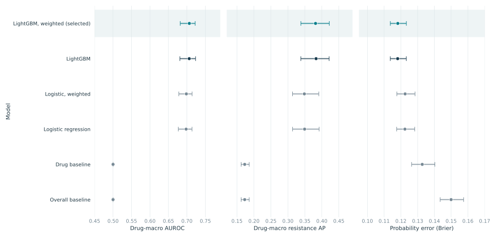
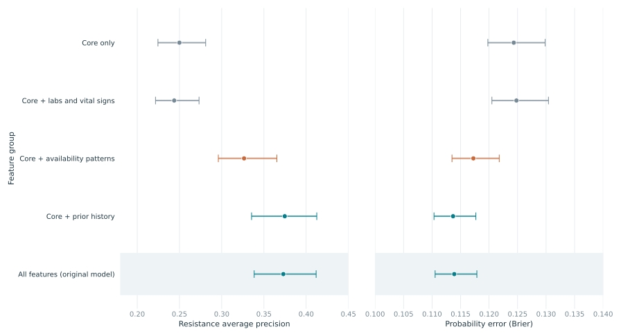
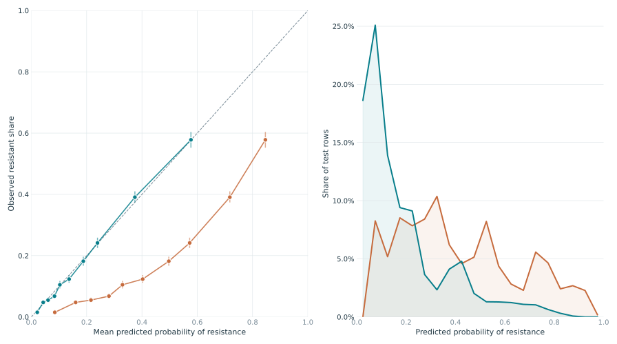
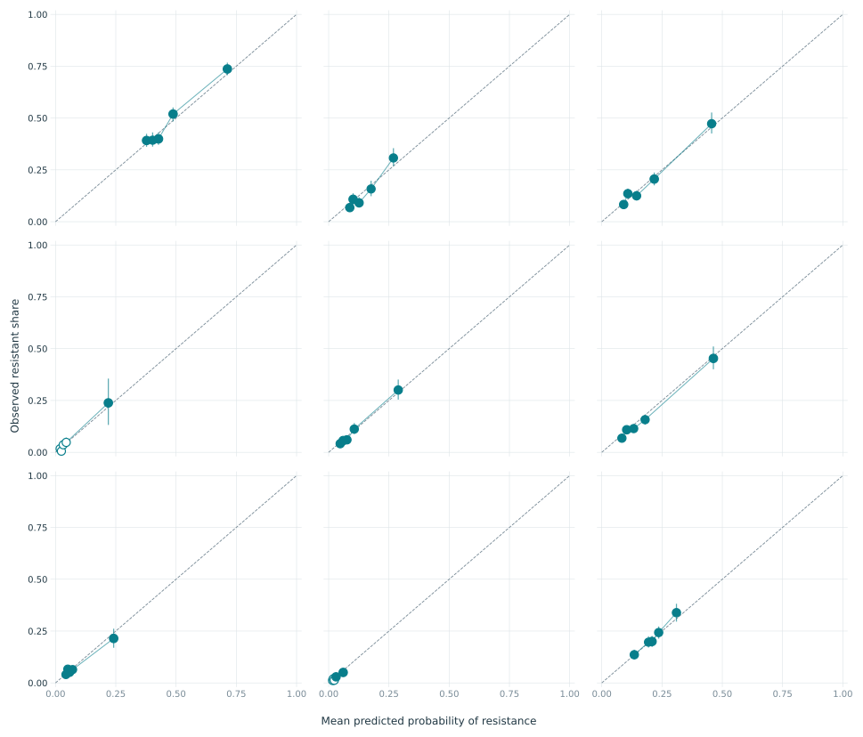
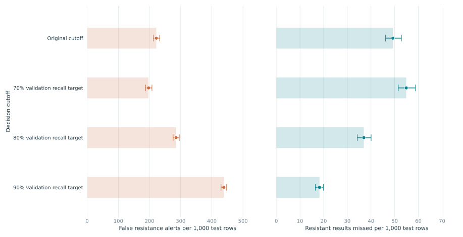
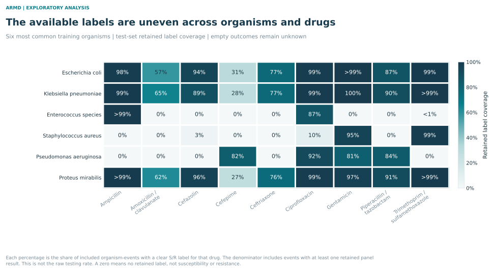
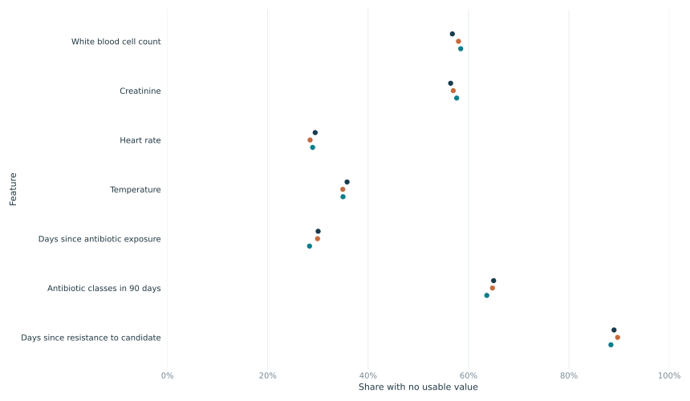

FIGURE 01 / 08
Model differences, with uncertainty
How large are the differences between the original models?

The selected weighted LightGBM has average resistance AP 0.381 across drugs. The unweighted version scores 0.383. The difference is small; these results do not show a clear benefit from class weighting.
AUROC checks ranking. Resistance average precision (AP) checks how well resistant results rise to the top. These two scores give each drug equal weight. Brier averages probability error over candidate rows. All models and the selected model are unchanged from the original analysis.
Source tables and scope
Original test results; fixed fitted models; pointwise intervals.
FIGURE 02 / 08
What each feature group adds on validation
Do measured values add information beyond basic fields and recording patterns?

Core plus prior history scores 0.375 for resistance AP; all features score 0.373. The paired full-minus-history difference is -0.002 (95% interval -0.011 to 0.009). This fixed recipe shows no clear added improvement from labs and vital signs once prior history is included. Similar scores do not prove equivalence.
Core plus availability patterns scores 0.326. The full model scores 0.046 AP higher (interval 0.029 to 0.060). The control keeps missing values missing and replaces observed numbers with a constant. A recorded prior-resistance entry already conveys history even when its time lag is erased, so this signal is not only about documentation habits.
Source tables and scope
Validation only. Similar scores do not establish equivalence or transportability.
FIGURE 04 / 08
Probability checks before and after calibration
Are the probabilities close to observed resistance rates, and how concentrated are they?

Brier falls from 0.179 before calibration to 0.118 after calibration. The paired decrease is 0.061 (95% interval 0.057 to 0.065). The calibrator was fitted on held-out training patients in the original run, not on these test outcomes.
The mean calibrated resistance probability is 18.6%; the observed resistant share is 18.4%. The reliability curve checks agreement across probability ranges. The lower Brier score is useful, but by itself does not prove good calibration at every probability.
Source tables and scope
A lower Brier score alone does not prove better calibration; use the reliability display too.
FIGURE 05 / 08
A good pooled calibration curve can hide drug differences
Does probability agreement hold within each candidate drug?

The drug panels show where probability checks have enough support and where they do not. Bin boundaries came from validation predictions. Open circles mark fewer than 100 test rows or fewer than 20 resistant results in a bin. Large uncertainty in a sparse bin should remain visible.
An acceptable pooled curve can conceal drug-level errors. Read each panel with its counts and intervals. These are descriptive checks on the existing test set. No drug-specific recalibration was fitted, and the plots do not show that the model will be calibrated at another hospital.
Source tables and scope
Open markers flag sparse bins; their estimates need more caution.
FIGURE 06 / 08
Finding more resistance brings more false alerts
What is the error burden when a cutoff aims to find more resistance?

The original cutoff gives about 222 false resistance alerts and 49 missed resistant results per 1,000 test rows. The 90% validation-recall target gives about 438 false alerts and 18 misses. Its actual test recall is 90.1%, while only 27.4% of alerts are correct.
Each new cutoff was chosen on validation and then held fixed for test. A pooled recall target does not ensure that each drug reaches that target. These counts describe classification errors per candidate row, not per patient. They are not treatment rules or estimates of clinical benefit.
Source tables and scope
Counts refer to candidate test rows, not patients. No treatment benefit or cost assumption is made.
FIGURE 07 / 08
The available labels are uneven across organisms and drugs
Which organism-drug combinations are well represented in the retained data?

Among included E. coli events, 30.7% have a retained cefepime label, compared with 99.7% for gentamicin. The six organisms were chosen by training frequency, rather than by test performance.
The denominator contains organism-events with at least one clear, retained susceptible or resistant result in the chosen panel. This is coverage within the analytical data, not the raw testing rate. A blank or zero does not mean susceptibility or resistance. The data cannot establish why an outcome is absent or how the model would perform on unobserved combinations.
Source tables and scope
The analysis cannot establish why a label is absent or estimate performance for untested combinations.
FIGURE 08 / 08
Missing information is common in every data split
How much clinical information is unavailable, and does that change across splits?

In test data, white blood cell count is missing for 58.4% of cultures. Prior candidate-resistance history is missing for 88.4% of culture-candidate pairs. A missing history record cannot establish that a patient had no past exposure or resistance.
Shared clinical fields are counted once per culture. Candidate resistance history is counted once per culture and candidate. This avoids giving a culture extra weight just because it has more organism or drug rows. Similar missing rates across splits do not prove similar case mix or complete source records.
Source tables and scope
Counts avoid repeatedly counting shared culture features once per organism and drug.
HOW TO READ THE EVIDENCE
Methods and limits
Status and scope
This appendix is an exploratory follow-up after the original test results were seen. It sits outside the original five-page report body. The original selected weighted LightGBM model, its predictions and its primary test scores remain fixed. No new winning model was selected.
Feature comparisons
Four reduced models use the original proper-fit patients, held-out training calibration patients, balanced training weights and fixed LightGBM settings. Preprocessing is fitted only on proper-fit data. Reduced models are scored on validation only. Those validation patients had already informed the original model choice, so these are not fresh independent estimates.
Uncertainty
New intervals use 500 shared patient-bootstrap draws. All rows for a sampled patient stay together. Paired comparisons use the same draws on both sides. The original model-comparison figure retains its 200-draw intervals. Intervals are pointwise, not adjusted for all comparisons, and do not include model-training or earlier selection uncertainty. Boundary intervals can collapse even when future performance is uncertain.
Calibration and cutoffs
Probabilities refer to resistance, P(R) = 1 - P(S). Calibration was fitted on training patients. Reliability-bin boundaries and new recall-target cutoffs use validation predictions. They are then kept fixed for test. No test-fitted calibrator or threshold is introduced.
Units and labels
The prediction unit is one patient, culture, organism and candidate drug. Labels are susceptible = 1 and resistant = 0. Intermediate, unknown and conflicting labels stay excluded. Error counts refer to candidate rows. Coverage refers only to organism-events with at least one retained panel label. Missingness uses culture or culture-candidate counts as stated in each table.
Limits that still apply
The nine-drug list remains provisional until the instructor confirms it. The supplied tables do not include a hospital identifier, so hospital validation is unavailable. Shifted dates do not support a calendar trend claim. No feature comparison establishes causality, no threshold establishes treatment benefit, and no result establishes performance at a new site.
Source and reproduction
The source is ARMD, described at https://www.nature.com/articles/s41597-025-05649-7 and released at https://datadryad.org/dataset/doi:10.5061/dryad.jq2bvq8kp. The gallery links each figure to its source tables. The workbook holds the result tables and metadata. scripts/start_advanced_analysis.py records the analysis plan and protects the primary files. scripts/make_advanced_package.py rebuilds this appendix and gallery from saved results.